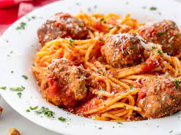

Spaghetti and Meatballs

Description
Spaghetti and Meatballs in homemade marinara sauce.
These are amazing “WOW”-inducing MEATBALLS – so tasty and juicy and BIG!
We’re sharing all of our secrets for incredibly tender and flavorful meatballs.
Ingredients
- 1 lb. spaghetti
- 1 lb. ground beef
- 1/3 c. bread crumbs
- 1/4 c. finely chopped parsley
- 1/4 c. freshly grated Parmesan, plus more for serving
- 1 large egg>
Steps
- In a large pot of salted boiling water, cook pasta until al dente. Drain.
- In a large bowl, combine beef with bread crumbs, parsley, Parmesan, egg, garlic,
1 teaspoon salt, and red pepper flakes. Mix until just combined then form into 16 balls.
- In a large pot over medium heat, heat oil. Add meatballs and cook, turning occasionally,
until browned on all sides, about 10 minutes. Transfer meatballs to a plate.
- Add onion to pot and cook until soft, 5 minutes. Add crushed tomatoes and bay leaf.
Season with salt and pepper and bring to a simmer.
Return meatballs to pot and cover. Simmer until sauce has thickened, 8 to 10 minutes.
- Serve pasta with a healthy scoop of meatballs and sauce. Top with Parmesan before serving.